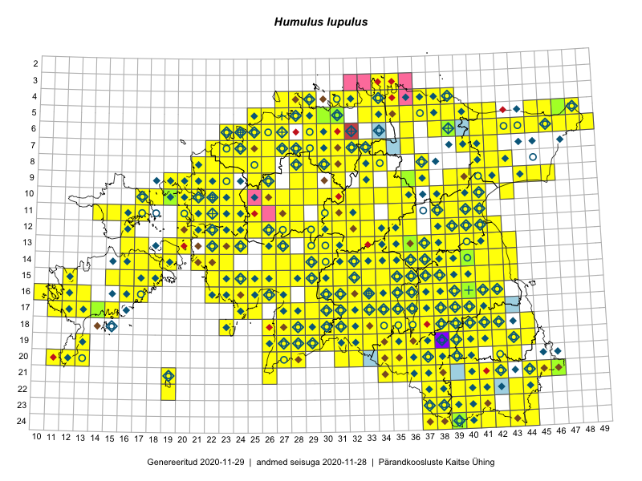

Humulus lupulus
Uuendatud: 2016-12-02
Kaardile koondatud taksonid: Humulus lupulus L.

Kaart põhineb 614 kirjel, neist vaatlusi 611 ja eksemplare 3. Taksonit on leitud 352 ruudust.
Kuvatud viited 20 esimesele andmebaasikirjele, ülejäänud PlutoFis
- Malle Leht: 2015-05-22: : ala
- Tiit Hallikma, Toomas Kukk, Indrek Tammekänd: 2015-06-09: 12-28: ala
- Malle Leht: 2015-07-09: : ala
- Peedu Saar, Timo Luhamäe: 2015-05-10: 12-30: ala
- Peedu Saar, Liina Oja: 2015-05-22: 19-30: ala
- Thea Kull: 2015-07-07: 16-40: ala
- Peedu Saar, Liina Oja: 2015-05-20: 18-27: ala
- Malle Leht: 2015-08-02: : ala
- Peedu Saar, Liina Oja: 2015-05-21: 16-24: ala
- Peedu Saar, Liina Oja: 2015-05-21: 16-25: ala
- Peedu Saar, Liina Oja: 2015-05-20: 18-28: ala
- Peedu Saar, Liina Oja: 2015-05-20: 18-26: ala
- Toomas Kukk, Eerik Leibak: 2015-08-08: 15-18: GPS punkt
- Toomas Kukk, Indrek Tammekänd: 2015-05-09: 14-28: ala
- Toomas Kukk, Peedu Saar: 2014-09-23: 06-42: ala
- Tiit Hallikma, Toomas Kukk: 2015-07-21: 05-45: ala
- Toomas Kukk, Raivo Kalle: 2015-05-14: 10-41: ala
- Toomas Kukk, Raivo Kalle: 2015-05-13: 06-38: ala
- Toomas Kukk, Raivo Kalle: 2015-05-12: 11-40: ala
- Ott Luuk, Toivo Sepp: 2015-07-29: 09-31: ala